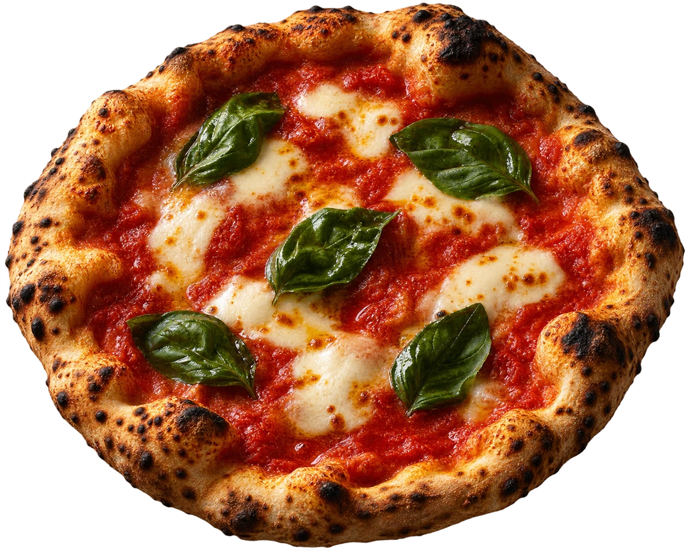
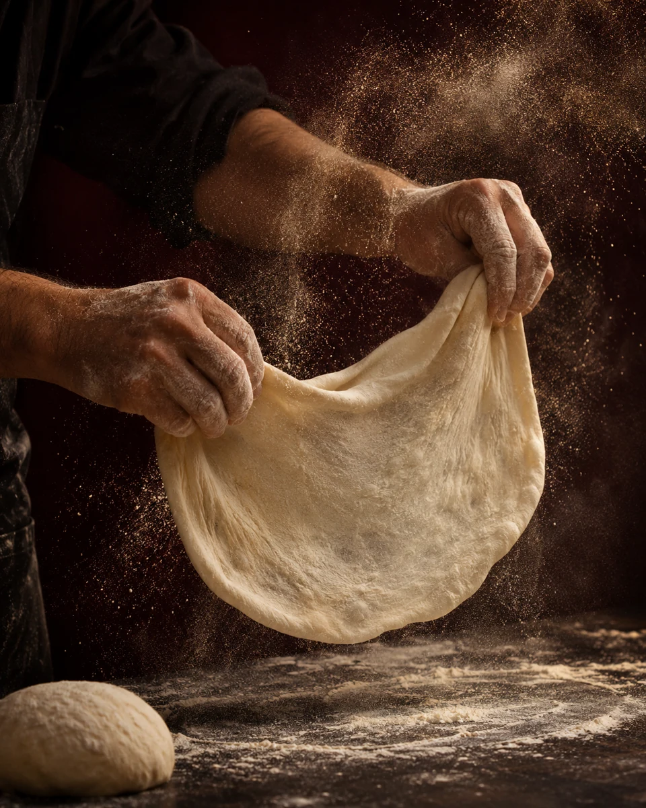
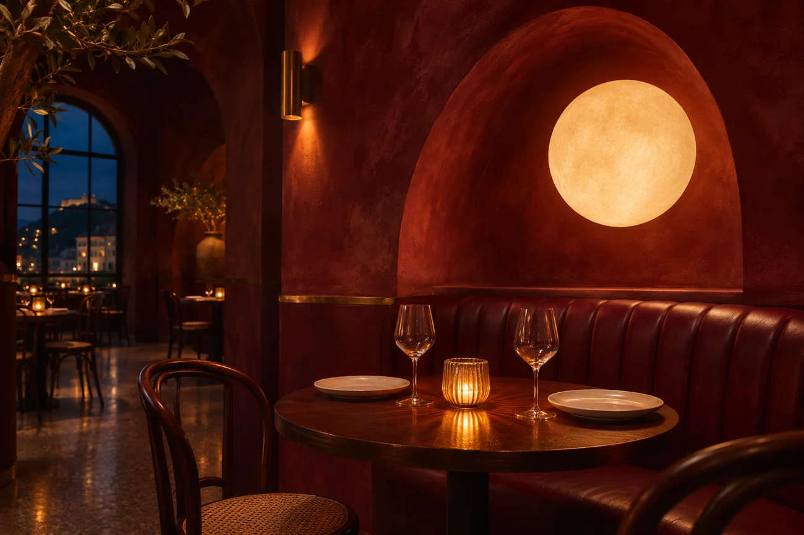

Lunaria

FORNO A LEGNA DALLE 19:00

Sul banco
Il tempo
nelle mani.
La sera prima mescoliamo acqua, farina, lievito e sale. Quando il panetto è pronto, lo apriamo dal centro con i polpastrelli. Il bordo resta gonfio d’aria fino all’incontro con la fiamma.

La sala · Chiaia, Napoli
Un posto per te.
Dal martedì alla domenica
19:00 – 23:00